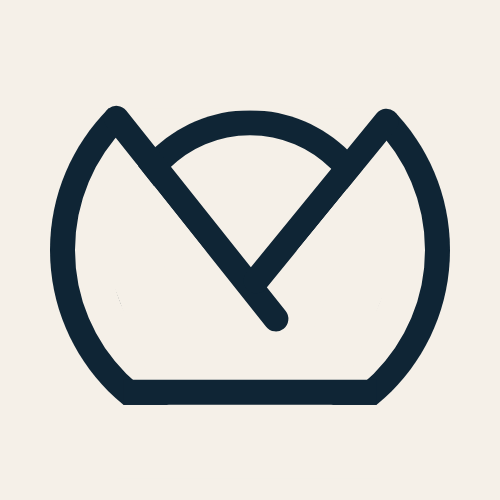

Ordinary Machines
We research how frontier technologies are reshaping humanity. We partner with organizations to guide consequential decisions driven by artificial intelligence.

We research how frontier technologies are reshaping humanity. We partner with organizations to guide consequential decisions driven by artificial intelligence.